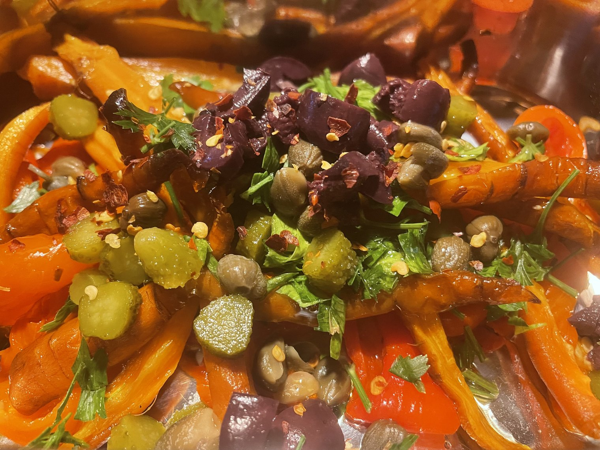

Pimiento escalivado y zanahoria horneada con pepinillos, alcaparras y olivas
Ingredients
2×
- 2 pimientos rojos
- 4 zanahorias
- 1 cda de concentrado de tomate
- 1 cda de vinagre de Módena
- chili flakes
- sal
- aceite de oliva
- pepinillos
- 1 cda de alcaparras
- olivas negras
- perejil

Preparación
Paso 1
Asar 2 pimientos rojos y 4 zanahorias enteras 45min a 200ºC. Pelar los pimientos y cortarlos en tiras; cortar las zanahorias a lo largo.
Paso 2
Preparar la salsa con 1 cda de concentrado de tomate, 1 cda de vinagre de Módena, chili flakes, sal y un poco de aceite de oliva.
Paso 3
Disponer los pimientos y la zanahoria, aliñar con la salsa y poner por encima pepinillos en rodajas, 1 cda de alcaparras, olivas negras troceadas y perejil picado.